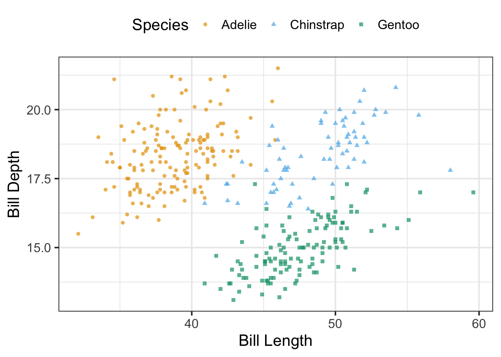

Show/Hide Code
require(tidyverse)
require(palmerpenguins)
penguins_data<-penguins
usability_test_results <- read_csv("usability_test_results.csv")Descriptive statistics provide simple summaries about the sample and about the observations that have been made. Such summaries may be either quantitative, i.e. summary statistics, or visual, i.e. simple-to-understand graphs. These summaries may either form the basis of the initial description of the data as part of a more extensive statistical analysis, or they may be sufficient in and of themselves for a particular investigation. As the average is self-explanatory and well understood we won’t go into details here. However, it is interesting to look at the relation between median and the average.
For all the examples here we will be using the tidyverse and the palmer penguins package. Exercises that I will prompt you to perform on your own will be done with the usability_test_results.csv data.
require(tidyverse)
require(palmerpenguins)
penguins_data<-penguins
usability_test_results <- read_csv("usability_test_results.csv")The median is calculated by first sorting a variable’s data from smallest to largest. After sorting the data, the middle element in the list is the median. If the middle falls between two values, then the median is the mean of those two middle values.
The standard deviation (SD) is a measure of how far we expect a given data value will be from its mean (variation, dispersion of data). A high SD means the data is spread out, while a low SD indicates that the values are close together.
The five point summary uses the following five values: (1) the minimum, (2) the first quantile AKA 25th percentile, (3) the second quantile AKA median or 50th percentile, (4) the third quantile AKA 75th, and (5) the maximum. The five-number summary of a variable is used when constructing boxplots. The quantiles are calculated as:
The interquartile range (IQR) is defined as Q3−Q1 and is a measure of how spread out the middle 50% of values are. The IQR corresponds to the length of the box in a boxplot. Median and IQR are not influecned by outliers in the ways mean and SD are and are thus recommended for skewed datasets . Correlation can be calculated using the function cor(x, y, method = c("pearson", "kendall", "spearman")).
Show and tell with palmer penguins:
penguins_data%>%summarise(median_fl_mm = median(flipper_length_mm,na.rm=TRUE),
sd_fl_mm = sd(flipper_length_mm,na.rm=TRUE))# A tibble: 1 × 2
median_fl_mm sd_fl_mm
<dbl> <dbl>
1 197 14.1#Of course this is most interesting per species
penguins_data%>%group_by(species)%>%
summarise(median_fl_mm = median(flipper_length_mm,na.rm=TRUE),
sd_fl_mm = sd(flipper_length_mm,na.rm=TRUE))# A tibble: 3 × 3
species median_fl_mm sd_fl_mm
<fct> <dbl> <dbl>
1 Adelie 190 6.54
2 Chinstrap 196 7.13
3 Gentoo 216 6.48# 5 point summary easily achieved like this
summary(penguins_data$body_mass_g) Min. 1st Qu. Median Mean 3rd Qu. Max. NA's
2700 3550 4050 4202 4750 6300 2 # Something new cor()
# How can we interpret the output?
penguins_data%>%summarise(correlation = cor(bill_length_mm,bill_depth_mm,use='complete.obs'))# A tibble: 1 × 1
correlation
<dbl>
1 -0.235Try it for yourself: * Calculate the correlation between time (tot_task1) and preceived difficulty (seq_task_1)
cor(usability_test_results$tot_task1,usability_test_results$seq_task1) [1] -0.006825935ggplot() is the workhorse to create visualizations in the tidyverse. ggplot2 comes with many geom functions that each add a different type of layer to a plot. You’ll learn a whole bunch of them throughout this class. The mapping= argument is always paired with aes(), and the x= and y= arguments of aes() specify which variables to map to the x and y axes. ggplot2 looks for the mapped variables in the data= argument.
Scatterplots are one of the most common ways to plot two numeric/continous variables on x and y to show their association. We create a scatter plot (geom_point()) of bill_length_mm and bill_depth_mm. We can make additional modifications to the plot:
coloraes())sizealpha)shape toogeom_smooth()).# This is a way of doing double-enconding mapping species
# both on color and on shape
ggplot(data=penguins_data,
mapping=aes(x=bill_length_mm,y=bill_depth_mm,
color=species,shape=species,size=body_mass_g))+
geom_point(alpha=0.5)Warning: Removed 2 rows containing missing values or values outside the scale range
(`geom_point()`).# Lets add a regression line (for visual aid for the eye)
ggplot(data=penguins_data,
mapping=aes(x=bill_length_mm,y=bill_depth_mm))+
geom_point(alpha=0.5,aes(color=species,
shape=species))+geom_smooth(method = 'lm')`geom_smooth()` using formula = 'y ~ x'Warning: Removed 2 rows containing non-finite outside the scale range (`stat_smooth()`).
Removed 2 rows containing missing values or values outside the scale range
(`geom_point()`).Try it for yourself using usability_test_results.csv:
usability_test_results%>%
# do all sorts of manipulation here before plotting) %>%
ggplot(aes(x=trips_per_year,y=countries_visited,
color=gender))+geom_point(shape=18,size=5)Warning: Removed 2 rows containing missing values or values outside the scale range
(`geom_point()`).usability_test_results%>%
ggplot(aes(x=tot_task1,y=seq_task1))+
geom_point(aes(color=gender))+geom_smooth(method='lm')`geom_smooth()` using formula = 'y ~ x'Bar charts work well for simple counts and percentages. We often want to show how some group, entity, or amount breaks down into individual pieces that each represent a proportion of the whole. Common examples include the proportions of men and women in a group of people, the percentages of people voting for different political parties in an election, or the market shares of companies. ggplot has two geom functions for bar charts: geom_bar() where the counting is done automatically and geom_col().
penguins_data%>%
ggplot(aes(y=species,fill=island))+geom_bar()penguins_data%>%
group_by(species)%>%
summarise(penguin_count = n())%>%
ggplot(aes(x=species,y=penguin_count,fill=species))+
geom_col(position=position_dodge())# Let's do a percentage plot
penguins_data%>%
group_by(island,species)%>%
summarise(penguin_count = n())%>%ungroup()%>%
mutate(percentage = penguin_count/sum(penguin_count))%>%
ggplot(aes(x=island,y=percentage,fill=species))+
geom_col()`summarise()` has grouped output by 'island'. You can override using the
`.groups` argument.Try it for yourself using usability_test_results.csv:
facet_wrap(). Have a look in the documentation on how to use it.# Some exercise with the usability_test_data
# Create a bar chart from the age groups
usability_test_results%>%
ggplot(aes(x=age))+geom_bar()# Create a bar chart for the variable education
usability_test_results%>%
ggplot(aes(x=education))+geom_bar()# Create a bar chart that shows favorite country by gender
usability_test_results%>%
filter(!is.na(favority_country))%>%
ggplot(aes(y=favority_country,fill=gender))+geom_bar()# Now here an example for facet_wrap()
usability_test_results%>%
filter(!is.na(favority_country))%>%
ggplot(aes(y=favority_country,fill=gender))+geom_bar()+facet_wrap(vars(gender))#scales = 'free')Histograms, boxplots and density plots are three common means to visualize distributions. The distribution of a variable shows how frequently different values of a variable occur. Looking at the visualization of a distribution can show where the values are centered, show how the values vary, and give some information about where a typical value might fall. It can also alert you to the presence of outliers.
Let’s look at an exmaple with the penguins: * We create a boxplot of body_mass_g, we can add points on top of it, but we choose geom_jitter() over geom_points() which adds a bit of noise. * We set the width=0.2 to spread out the points a bit, and alpha=0.6 so we account for the overlapping. * We map species on to color * We create a second graph to show the distribution with geom_density()
#guides(color='none') removes the color legend
penguins_data%>%
ggplot(aes(x=body_mass_g,y=species,color=species))+geom_boxplot()+
geom_jitter(height=0.2,alpha=0.4)+theme_minimal()+guides(color='none')Warning: Removed 2 rows containing non-finite outside the scale range
(`stat_boxplot()`).Warning: Removed 2 rows containing missing values or values outside the scale range
(`geom_point()`).Try it yourself with usability_test_results.csv:
histogram and density plot of trips_per_yearusability_test_results%>%
select(tot_task1,tot_task2,tot_task3)%>%
pivot_longer(cols=everything(),
names_to = 'task',
values_to = 'time_on_task')%>%
ggplot(aes(x=task,y=time_on_task,color=task))+geom_boxplot()When teaching data visualisation (even in the simplest sense) it is important to discussgood practices, e.g. present data in ascending/descending order, label axes in a way that matches your narrative, etc. Packages like scales and forcats are incredibly helpful for implementing these small but impactful improvements to visualisations. In this example we improve the standard plot by:
#install.packages('scales')
require(scales)Loading required package: scales
Attaching package: 'scales'The following object is masked from 'package:purrr':
discardThe following object is masked from 'package:readr':
col_factorpenguins %>%
count(species) %>%
mutate(prop = n / sum(n)) %>%
ggplot(aes(x = prop, y = fct_reorder(species, prop))) +
geom_col() +
scale_x_continuous(labels = label_percent(accuracy = 1)) +
labs(
x = "Percentage",
y = "Species",
title = "Species distribution of penguins",
subtitle = "Adelie, Gentoo, and Chinstrap Penguins at Palmer Station",
)Think about users that have some form of color-vision deficiency. It is recommended to use cvd-safe color scales. One of these is the Okabe-Ito scale (qualitative). For other purposes (continous scales) viridis is a good choice.
color_values <-c('#E69F00','#56B4E9','#009E73')
ggplot(data=penguins_data,
mapping=aes(x=bill_length_mm,y=bill_depth_mm,
color=species,shape=species))+
geom_point(alpha=0.7)+
scale_color_manual(values = color_values)+
labs(x='Bill Length',y='Bill Depth',color='Species',shape='Species')+
theme_bw(base_size = 16)+theme(legend.position = 'top')Warning: Removed 2 rows containing missing values or values outside the scale range
(`geom_point()`).